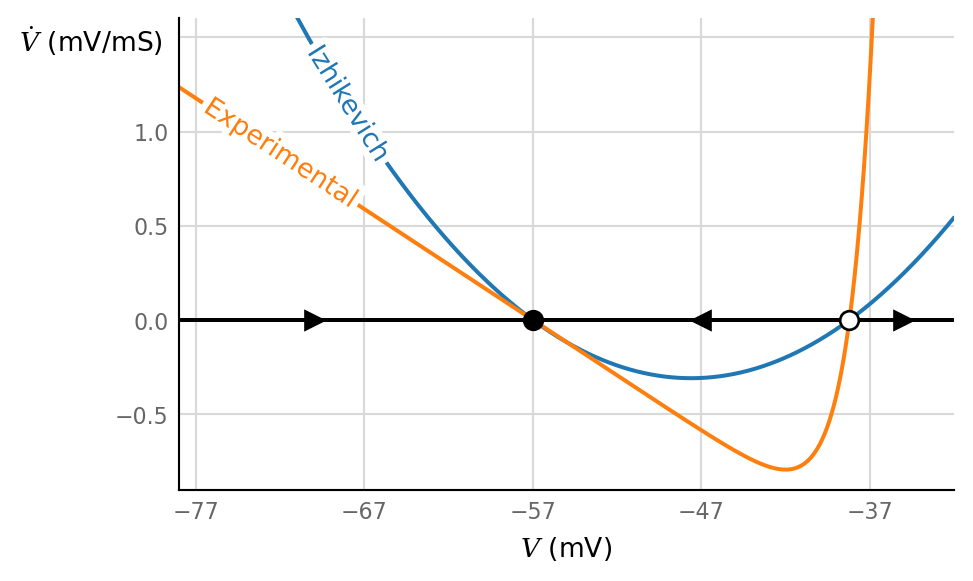
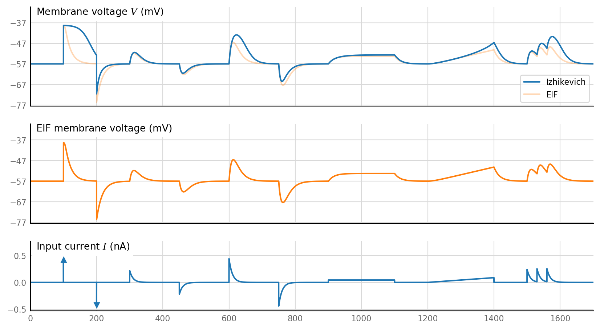

2021-12-08 • Biology vs Izhikevich subthreshold
Contents
2021-12-08 • Biology vs Izhikevich subthreshold¶
[Prelude]¶
from voltage_to_wiring_sim.notebook_init import *
Preloading: numpy, numba, matplotlib.pyplot, seaborn.
Importing from submodules … ✔
Imported `np`, `mpl`, `plt`, `sns`, `pd`
Imported codebase (`voltage_to_wiring_sim`) as `v`
Imported `*` from `v.support.units`
Setup autoreload
v.print_reproducibility_info()
This cell was last run by tfiers on yoga on Wed 19 Jan 2022, at 02:40 (UTC+0000).
Last git commit (Tue 18 Jan 2022, 09:06).
Uncommited changes to 56 files.
\(dV/dt\)¶
We reproduce dV curve from Badel 2008, fig 2 B.
(fig 2 is for cortical neuron, fig 1 for something else).
EIF paremeters are taken from fig 2F, for time since last spike > 200 ms.
E_L = -57 * mV
τ_m = 17 * ms
V_rh = -42 * mV
Δ_T = 1.5 * mV
C = 200 * pF
dV_dt_EIF = lambda V, I: (E_L - V + Δ_T*np.exp((V - V_rh) / Δ_T)) / τ_m + I / C;
Fit Izhikevich neuron to Badel’s EIF neuron: same resting potential, same spiking threshold.
from scipy.optimize import newton
V_t = newton(partial(dV_dt_EIF, I=0), -40*mV);
# Rk = 53
k = 0.7 * (nS / mV)
dV_dt_Izh = lambda V, I: (k * (V - E_L) * (V - V_t) + I) / C;
fig, ax = plt.subplots()
ax.axhline(y=0, color='k')
ax.set_xlabel("$V$ (mV)")
v.horizontal_ylabel(ax, "$\dot{V}$ (mV/mS)")
V = np.linspace(-78 * mV, -32 * mV, num=1000)
# V = np.linspace(E_L - 0.1*mV, E_L + 0.1*mV, num=1000)
ax.plot(V / mV, dV_dt_Izh(V, I=0), label="Izhikevich")
ax.plot(V / mV, dV_dt_EIF(V, I=0), label="Experimental")
ax.set_xticks(E_L/mV + np.array([-20, -10, 0, 10, 20]))
ax.plot(-70, 0, "k>", ms=7)
ax.plot(-47, 0, "k<", ms=7)
ax.plot(-35, 0, "k>", ms=7)
ax.plot(E_L/mV, 0, "ko", ms=7)
ax.plot(V_t/mV, 0, "ko", ms=7, markerfacecolor="white")
ax.set_xlim(-78, -32)
ax.set_ylim(-0.9, 1.6)
label_lines(ax.lines, xvals=[-68, -72]);

Simulation¶
Input¶
from voltage_to_wiring_sim.support.test_current import *
dt = 0.1 * ms
duration = 1700 * ms
timesteps = v.to_indices(duration, dt)
I = np.zeros(timesteps)
Q = 0.22 * nA * 10 * ms
T = 200*ms
τ=10*ms
add_δ(1.7*Q, (t_δ_up := 100*ms), I, dt)
add_δ(-1.7*Q, (t_δ_down := 200*ms), I, dt)
add_pulse_with_decay(Q, 300*ms, T, I, dt, τ)
add_pulse_with_decay(-Q, 450*ms, T, I, dt, τ)
add_pulse_with_decay(2*Q, 600*ms, T, I, dt, τ)
add_pulse_with_decay(-2*Q, 750*ms, T, I, dt, τ)
add_plateau(4*Q, 900*ms, T, I, dt)
add_ramp(4*Q, 1200*ms, T, I, dt)
add_pulse_with_decay(1.1*Q, 1500 * ms, T-100*ms, I, dt)
add_pulse_with_decay(1.1*Q, 1530 * ms, T-100*ms, I, dt)
add_pulse_with_decay(1.1*Q, 1560 * ms, T-100*ms, I, dt)
Integration¶
V_EIF = np.ones(timesteps) * E_L
V_Izh = np.ones(timesteps) * E_L
for i in range(timesteps - 1):
V_EIF[i+1] = V_EIF[i] + dV_dt_EIF(V_EIF[i], I[i]) * dt
V_Izh[i+1] = V_Izh[i] + dV_dt_Izh(V_Izh[i], I[i]) * dt
Plot¶
fig, axs = plt.subplots(nrows=3, sharex=True, **v.figsize(aspect=1.8, width=1000),
gridspec_kw=dict(height_ratios=[1, 1, 0.7]))
t = np.linspace(0, duration / ms, timesteps, False)
axs[1].plot(t, V_EIF / mV, c="C1")
axs[0].plot(t, V_EIF / mV, c="C1", alpha=0.3, label="EIF")
axs[0].plot(t, V_Izh / mV, c="C0", label="Izhikevich")
v.add_reordered_legend(axs[0], [1,0])
v.ylabel_inside(axs[0], "Membrane voltage $V$ (mV)", ylim_shift=18)
v.ylabel_inside(axs[1], "EIF membrane voltage (mV)", ylim_shift=18)
V_ticks = E_L / mV + np.arange(-20, 21, 10)
axs[0].set_yticks(V_ticks)
axs[1].set_yticks(V_ticks)
axs[1].set_ylim(axs[0].get_ylim())
plot_test_current(axs[2], t, I/nA, (-0.53, 0.53), yδ=0.8)
v.ylabel_inside(axs[2], "Input current $I$ (nA)", ylim_shift=16)
axs[0].set_xlim(left=0, right=duration/ms);

[Reproducibility]¶
v.print_reproducibility_info(verbose=True)
This cell was last run by tfiers on yoga
on Wed 19 Jan 2022, at 02:40 (UTC+0000).
Last git commit (Tue 18 Jan 2022, 09:06).
Uncommited changes to:
M .gitmodules
D Manifest.toml
MM Project.toml
MM ReadMe.md
R dev/Distributions -> codebase/julia/dev/Distributions
RD src/VoltageToMap.jl -> julia/src/VoltageToMap.jl
RD src/myplotlib/colors.jl -> julia/src/myplotlib/colors.jl
RD src/myplotlib/imports.jl -> julia/src/myplotlib/imports.jl
RD src/myplotlib/plot.jl -> julia/src/myplotlib/plot.jl
RD src/myplotlib/set.jl -> julia/src/myplotlib/set.jl
RD src/myplotlib/style.jl -> julia/src/myplotlib/style.jl
RD src/myplotlib/ticks.jl -> julia/src/myplotlib/ticks.jl
RD src/myplotlib/typecompat.jl -> julia/src/myplotlib/typecompat.jl
RD src/show.jl -> julia/src/show.jl
RD src/signal.jl -> julia/src/signal.jl
RD src/unitfuldistributions.jl -> julia/src/unitfuldistributions.jl
M notebooks/2022-01-08__1000_to_1.ipynb
M notebooks/2022-01-08__1000_to_1.jl
RD codebase/tests/test_run_embedded_tests.py -> python/tests/test_run_embedded_tests.py
RD codebase/voltage_to_wiring_sim/__init__.py -> python/voltage_to_wiring_sim/__init__.py
RD codebase/voltage_to_wiring_sim/conntest/STA.py -> python/voltage_to_wiring_sim/conntest/STA.py
RD codebase/voltage_to_wiring_sim/conntest/__init__.py -> python/voltage_to_wiring_sim/conntest/__init__.py
RD codebase/voltage_to_wiring_sim/conntest/classification.py -> python/voltage_to_wiring_sim/conntest/classification.py
RD codebase/voltage_to_wiring_sim/conntest/classification_IE.py -> python/voltage_to_wiring_sim/conntest/classification_IE.py
RD codebase/voltage_to_wiring_sim/conntest/permutation_test.py -> python/voltage_to_wiring_sim/conntest/permutation_test.py
RD codebase/voltage_to_wiring_sim/experiments/N_to_1.py -> python/voltage_to_wiring_sim/experiments/N_to_1.py
RD codebase/voltage_to_wiring_sim/experiments/N_to_1_IE.py -> python/voltage_to_wiring_sim/experiments/N_to_1_IE.py
RD codebase/voltage_to_wiring_sim/experiments/__init__.py -> python/voltage_to_wiring_sim/experiments/__init__.py
RD codebase/voltage_to_wiring_sim/notebook_init.py -> python/voltage_to_wiring_sim/notebook_init.py
RD codebase/voltage_to_wiring_sim/sim/__init__.py -> python/voltage_to_wiring_sim/sim/__init__.py
RD codebase/voltage_to_wiring_sim/sim/imaging.py -> python/voltage_to_wiring_sim/sim/imaging.py
RD codebase/voltage_to_wiring_sim/sim/izhikevich_neuron.py -> python/voltage_to_wiring_sim/sim/izhikevich_neuron.py
RD codebase/voltage_to_wiring_sim/sim/neuron_params.py -> python/voltage_to_wiring_sim/sim/neuron_params.py
RD codebase/voltage_to_wiring_sim/sim/poisson_spikes.py -> python/voltage_to_wiring_sim/sim/poisson_spikes.py
RD codebase/voltage_to_wiring_sim/sim/synapses.py -> python/voltage_to_wiring_sim/sim/synapses.py
RD codebase/voltage_to_wiring_sim/support/__init__.py -> python/voltage_to_wiring_sim/support/__init__.py
RD codebase/voltage_to_wiring_sim/support/array_wrapper.py -> python/voltage_to_wiring_sim/support/array_wrapper.py
RD codebase/voltage_to_wiring_sim/support/high_performance.py -> python/voltage_to_wiring_sim/support/high_performance.py
RD codebase/voltage_to_wiring_sim/support/misc.py -> python/voltage_to_wiring_sim/support/misc.py
RD codebase/voltage_to_wiring_sim/support/plot_style.py -> python/voltage_to_wiring_sim/support/plot_style.py
RD codebase/voltage_to_wiring_sim/support/plot_util.py -> python/voltage_to_wiring_sim/support/plot_util.py
RD codebase/voltage_to_wiring_sim/support/printing.py -> python/voltage_to_wiring_sim/support/printing.py
RD codebase/voltage_to_wiring_sim/support/reproducibility.py -> python/voltage_to_wiring_sim/support/reproducibility.py
RD codebase/voltage_to_wiring_sim/support/scalebar.py -> python/voltage_to_wiring_sim/support/scalebar.py
RD codebase/voltage_to_wiring_sim/support/signal.py -> python/voltage_to_wiring_sim/support/signal.py
RD codebase/voltage_to_wiring_sim/support/spike_train.py -> python/voltage_to_wiring_sim/support/spike_train.py
RD codebase/voltage_to_wiring_sim/support/test_current.py -> python/voltage_to_wiring_sim/support/test_current.py
RD codebase/voltage_to_wiring_sim/support/units.py -> python/voltage_to_wiring_sim/support/units.py
D runtime.txt
M setup.py
?? JuliaManifest.toml
?? JuliaProject.toml
?? codebase/julia/Manifest.toml
?? codebase/julia/Project.toml
?? codebase/julia/src/
?? codebase/python/
Platform:
Windows-10
CPython 3.9.7 (C:\conda\python.exe)
Intel(R) Core(TM) i7-10510U CPU @ 1.80GHz
Dependencies of voltage_to_wiring_sim and their installed versions:
numpy 1.21.4
matplotlib 3.4.3
numba 0.53.1
joblib 1.0.1
seaborn 0.11.1
scipy 1.7.2
preload 2.2
nptyping 1.4.0
matplotlib-label-lines 0.4.3
Full conda list:
# packages in environment at C:\conda:
#
# Name Version Build Channel
anyio 3.3.4 py39hcbf5309_1 conda-forge
appdirs 1.4.4 pyh9f0ad1d_0 conda-forge
argon2-cffi 21.1.0 py39hb82d6ee_2 conda-forge
async_generator 1.10 py_0 conda-forge
atomicwrites 1.4.0 pyh9f0ad1d_0 conda-forge
attrs 20.3.0 pyhd3deb0d_0 conda-forge
babel 2.9.1 pyh44b312d_0 conda-forge
backcall 0.2.0 pyh9f0ad1d_0 conda-forge
backports 1.0 py_2 conda-forge
backports.functools_lru_cache 1.6.4 pyhd8ed1ab_0 conda-forge
black 20.8b1 py_1 conda-forge
bleach 4.1.0 pyhd8ed1ab_0 conda-forge
bokeh 2.4.1 py39hcbf5309_2 conda-forge
brian2 2.5.0.1 py39h2e07f2f_0 conda-forge
brotlipy 0.7.0 py39hb82d6ee_1003 conda-forge
bzip2 1.0.8 h8ffe710_4 conda-forge
ca-certificates 2021.10.8 h5b45459_0 conda-forge
certifi 2021.10.8 py39hcbf5309_1 conda-forge
cffi 1.15.0 py39h0878f49_0 conda-forge
chardet 4.0.0 py39hcbf5309_2 conda-forge
charset-normalizer 2.0.0 pyhd8ed1ab_0 conda-forge
click 7.1.2 pyh9f0ad1d_0 conda-forge
cloudpickle 2.0.0 pyhd8ed1ab_0 conda-forge
colorama 0.4.4 pyh9f0ad1d_0 conda-forge
conda 4.11.0 py39hcbf5309_0 conda-forge
conda-package-handling 1.7.3 py39hb3671d1_1 conda-forge
console_shortcut 0.1.1 4
cryptography 35.0.0 py39h7bc7c5c_2 conda-forge
cycler 0.11.0 pyhd8ed1ab_0 conda-forge
cython 0.29.26 py39h415ef7b_0 conda-forge
cytoolz 0.11.2 py39hb82d6ee_1 conda-forge
dask 2021.1.0 pyhd8ed1ab_0 conda-forge
dask-core 2021.1.0 pyhd8ed1ab_0 conda-forge
dataclasses 0.8 pyhc8e2a94_3 conda-forge
debugpy 1.5.1 py39h415ef7b_0 conda-forge
decorator 5.1.0 pyhd8ed1ab_0 conda-forge
defusedxml 0.7.1 pyhd8ed1ab_0 conda-forge
distributed 2021.1.1 py39hcbf5309_0 conda-forge
docutils 0.16 pypi_0 pypi
entrypoints 0.3 pyhd8ed1ab_1003 conda-forge
freetype 2.10.4 h546665d_1 conda-forge
fsspec 2021.11.0 pyhd8ed1ab_0 conda-forge
gitdb 4.0.9 pyhd8ed1ab_0 conda-forge
gitpython 3.1.24 pyhd8ed1ab_0 conda-forge
gsl 2.7 hdfb1a43_0 conda-forge
heapdict 1.0.1 py_0 conda-forge
icu 68.2 h0e60522_0 conda-forge
idna 3.1 pyhd3deb0d_0 conda-forge
importlib-metadata 4.8.2 py39hcbf5309_0 conda-forge
importlib_metadata 4.8.2 hd3eb1b0_0
importlib_resources 5.4.0 pyhd8ed1ab_0 conda-forge
iniconfig 1.1.1 pyh9f0ad1d_0 conda-forge
intel-openmp 2021.4.0 h57928b3_3556 conda-forge
ipykernel 6.5.0 py39h832f523_1 conda-forge
ipython 7.29.0 py39h832f523_2 conda-forge
ipython_genutils 0.2.0 py_1 conda-forge
ipywidgets 7.6.3 pyhd3deb0d_0 conda-forge
jbig 2.1 h8d14728_2003 conda-forge
jedi 0.18.0 py39hcbf5309_3 conda-forge
jinja2 3.0.3 pyhd8ed1ab_0 conda-forge
joblib 1.0.1 pypi_0 pypi
jpeg 9d h8ffe710_0 conda-forge
json5 0.9.5 pyh9f0ad1d_0 conda-forge
jsonschema 4.2.1 pyhd8ed1ab_0 conda-forge
jupyter_client 7.0.6 pyhd8ed1ab_0 conda-forge
jupyter_contrib_core 0.3.3 py_2 conda-forge
jupyter_contrib_nbextensions 0.5.1 pyhd8ed1ab_2 conda-forge
jupyter_core 4.9.1 py39hcbf5309_1 conda-forge
jupyter_highlight_selected_word 0.2.0 py39hcbf5309_1002 conda-forge
jupyter_latex_envs 1.4.6 pyhd8ed1ab_1002 conda-forge
jupyter_nbextensions_configurator 0.4.1 py39hcbf5309_2 conda-forge
jupyter_server 1.11.2 pyhd8ed1ab_0 conda-forge
jupyterlab 3.0.5 pyhd8ed1ab_0 conda-forge
jupyterlab-classic 0.1.3 pyhd8ed1ab_0 conda-forge
jupyterlab-sublime 0.4.1 pypi_0 pypi
jupyterlab_pygments 0.1.2 pyh9f0ad1d_0 conda-forge
jupyterlab_server 2.8.2 pyhd8ed1ab_0 conda-forge
jupyterlab_widgets 1.0.2 pyhd8ed1ab_0 conda-forge
jupytext 1.10.0 pyh44b312d_0 conda-forge
jupytray 0.7.post10+dirty dev_0 <develop>
keyring 21.8.0 pypi_0 pypi
kiwisolver 1.3.2 py39h2e07f2f_1 conda-forge
krb5 1.19.2 h20d022d_3 conda-forge
lcms2 2.12 h2a16943_0 conda-forge
lerc 3.0 h0e60522_0 conda-forge
libarchive 3.5.2 hb45042f_1 conda-forge
libblas 3.9.0 8_mkl conda-forge
libcblas 3.9.0 8_mkl conda-forge
libclang 11.1.0 default_h5c34c98_1 conda-forge
libcurl 7.80.0 h789b8ee_0 conda-forge
libdeflate 1.8 h8ffe710_0 conda-forge
libiconv 1.16 he774522_0 conda-forge
liblapack 3.9.0 8_mkl conda-forge
libpng 1.6.37 h1d00b33_2 conda-forge
libsodium 1.0.18 h8d14728_1 conda-forge
libsolv 0.7.19 h7755175_5 conda-forge
libssh2 1.10.0 h680486a_2 conda-forge
libtiff 4.3.0 hd413186_2 conda-forge
libxml2 2.9.12 hf5bbc77_1 conda-forge
libxslt 1.1.33 h65864e5_3 conda-forge
libzlib 1.2.11 h8ffe710_1013 conda-forge
llvmlite 0.36.0 py39ha0cd8c8_0 conda-forge
locket 0.2.0 py_2 conda-forge
lxml 4.6.4 py39h4fd7cdf_0 conda-forge
lz4-c 1.9.3 h8ffe710_1 conda-forge
lzo 2.10 he774522_1000 conda-forge
m2w64-gcc-libgfortran 5.3.0 6 conda-forge
m2w64-gcc-libs 5.3.0 7 conda-forge
m2w64-gcc-libs-core 5.3.0 7 conda-forge
m2w64-gmp 6.1.0 2 conda-forge
m2w64-libwinpthread-git 5.0.0.4634.697f757 2 conda-forge
mamba 0.7.14 py39h006a82b_0 conda-forge
markdown-it-py 0.6.2 pyhd8ed1ab_0 conda-forge
markdown2 2.4.0 pypi_0 pypi
markupsafe 2.0.1 py39hb82d6ee_1 conda-forge
matplotlib-base 3.4.3 py39h581301d_2 conda-forge
matplotlib-inline 0.1.3 pyhd8ed1ab_0 conda-forge
matplotlib-label-lines 0.4.3 pypi_0 pypi
mdit-py-plugins 0.2.5 pyhd8ed1ab_0 conda-forge
menuinst 1.4.18 py39hcbf5309_1 conda-forge
mistune 0.8.4 py39hb82d6ee_1005 conda-forge
mkl 2020.4 hb70f87d_311 conda-forge
more-itertools 8.11.0 pyhd8ed1ab_0 conda-forge
mpmath 1.2.1 pyhd8ed1ab_0 conda-forge
msgpack-python 1.0.2 py39h2e07f2f_2 conda-forge
msys2-conda-epoch 20160418 1 conda-forge
multipledispatch 0.6.0 pypi_0 pypi
multitasking 0.0.9 pypi_0 pypi
mypy_extensions 0.4.3 py39hcbf5309_4 conda-forge
nb_conda_kernels 2.3.1 py39hcbf5309_1 conda-forge
nbclassic 0.2.6 pyhd8ed1ab_0 conda-forge
nbclient 0.5.8 pyhd8ed1ab_0 conda-forge
nbconvert 6.3.0 py39hcbf5309_1 conda-forge
nbdime 2.1.0 py_0 conda-forge
nbformat 5.0.8 py_0 conda-forge
nest-asyncio 1.5.1 pyhd8ed1ab_0 conda-forge
notebook 6.4.5 pyha770c72_0 conda-forge
nptyping 1.4.0 pypi_0 pypi
numba 0.53.1 py39hb8cd55e_1 conda-forge
numpy 1.21.4 py39h6635163_0 conda-forge
oauthlib 3.1.0 pypi_0 pypi
oboe 0.2 pypi_0 pypi
olefile 0.46 pyh9f0ad1d_1 conda-forge
openjpeg 2.4.0 hb211442_1 conda-forge
openssl 1.1.1l h8ffe710_0 conda-forge
packaging 21.2 pyhd8ed1ab_1 conda-forge
pandas 1.3.4 py39h2e25243_1 conda-forge
pandoc 2.16.1 h8ffe710_0 conda-forge
pandocfilters 1.5.0 pyhd8ed1ab_0 conda-forge
parso 0.8.2 pyhd8ed1ab_0 conda-forge
partd 1.2.0 pyhd8ed1ab_0 conda-forge
pathspec 0.9.0 pyhd8ed1ab_0 conda-forge
patsy 0.5.2 pyhd8ed1ab_0 conda-forge
pickleshare 0.7.5 py_1003 conda-forge
pillow 8.4.0 py39h916092e_0 conda-forge
pint 0.18 pyhd8ed1ab_0 conda-forge
pip 21.3.1 pyhd8ed1ab_0 conda-forge
pkginfo 1.6.1 pypi_0 pypi
pluggy 1.0.0 py39hcbf5309_2 conda-forge
powershell_shortcut 0.0.1 3
preload 2.2 pypi_0 pypi
prometheus_client 0.12.0 pyhd8ed1ab_0 conda-forge
prompt-toolkit 3.0.22 pyha770c72_0 conda-forge
psutil 5.8.0 py39hb82d6ee_2 conda-forge
py 1.11.0 pyh6c4a22f_0 conda-forge
py-cpuinfo 8.0.0 pyhd8ed1ab_0 conda-forge
pycosat 0.6.3 py39hb82d6ee_1009 conda-forge
pycparser 2.21 pyhd8ed1ab_0 conda-forge
pygments 2.10.0 pyhd8ed1ab_0 conda-forge
pyopenssl 21.0.0 pyhd8ed1ab_0 conda-forge
pypandoc 1.6.3 pypi_0 pypi
pyparsing 2.4.7 pyhd8ed1ab_1 conda-forge
pyqt 5.12.3 py39hb0d2dfa_4 conda-forge
pyqt5-sip 4.19.18 pypi_0 pypi
pyqtchart 5.12 pypi_0 pypi
pyqtwebengine 5.12.1 pypi_0 pypi
pyrsistent 0.18.0 py39hb82d6ee_0 conda-forge
pysocks 1.7.1 py39hcbf5309_4 conda-forge
pytest 6.2.5 py39hcbf5309_1 conda-forge
python 3.9.7 h7840368_3_cpython conda-forge
python-dateutil 2.8.2 pyhd8ed1ab_0 conda-forge
python_abi 3.9 2_cp39 conda-forge
pytz 2021.3 pyhd8ed1ab_0 conda-forge
pywin32 302 py39hb82d6ee_2 conda-forge
pywin32-ctypes 0.2.0 pypi_0 pypi
pywinpty 1.1.6 py39h99910a6_0 conda-forge
pyyaml 6.0 py39hb82d6ee_3 conda-forge
pyzmq 22.3.0 py39he46f08e_1 conda-forge
qt 5.12.9 h5909a2a_4 conda-forge
readme-renderer 28.0 pypi_0 pypi
regex 2021.11.10 py39hb82d6ee_0 conda-forge
reproc 14.2.3 h8ffe710_0 conda-forge
reproc-cpp 14.2.3 h0e60522_0 conda-forge
requests 2.26.0 pyhd8ed1ab_0 conda-forge
requests-oauthlib 1.3.0 pypi_0 pypi
requests-toolbelt 0.9.1 pypi_0 pypi
rfc3986 1.4.0 pypi_0 pypi
ruamel_yaml 0.15.80 py39hb82d6ee_1006 conda-forge
scikit-learn 1.0.1 py39he931e04_2 conda-forge
scipy 1.7.2 py39hc0c34ad_0 conda-forge
seaborn 0.11.1 h57928b3_0 conda-forge
seaborn-base 0.11.1 pyhd8ed1ab_1 conda-forge
send2trash 1.8.0 pyhd8ed1ab_0 conda-forge
setuptools 59.1.1 py39hcbf5309_0 conda-forge
setuptools-scm 5.0.1 pypi_0 pypi
six 1.16.0 pyh6c4a22f_0 conda-forge
smmap 3.0.5 pyh44b312d_0 conda-forge
snakeviz 2.1.0 pyh9f0ad1d_0 conda-forge
sniffio 1.2.0 py39hcbf5309_2 conda-forge
sortedcontainers 2.4.0 pyhd8ed1ab_0 conda-forge
sqlite 3.36.0 h8ffe710_2 conda-forge
statsmodels 0.13.1 py39h5d4886f_0 conda-forge
sympy 1.9 py39hcbf5309_1 conda-forge
tblib 1.7.0 pyhd8ed1ab_0 conda-forge
terminado 0.12.1 py39hcbf5309_1 conda-forge
testpath 0.5.0 pyhd8ed1ab_0 conda-forge
tfiers 0.3.2 dev_0 <develop>
threadpoolctl 3.0.0 pyh8a188c0_0 conda-forge
tk 8.6.11 h8ffe710_1 conda-forge
toml 0.10.2 pyhd8ed1ab_0 conda-forge
toolz 0.11.2 pyhd8ed1ab_0 conda-forge
tornado 6.1 py39hb82d6ee_2 conda-forge
tqdm 4.62.3 pyhd8ed1ab_0 conda-forge
traitlets 5.1.1 pyhd8ed1ab_0 conda-forge
tweepy 3.10.0 pypi_0 pypi
twine 3.3.0 pypi_0 pypi
typed-ast 1.5.0 py39hb82d6ee_0 conda-forge
typing_extensions 3.10.0.2 pyha770c72_0 conda-forge
typish 1.9.1 pypi_0 pypi
tzdata 2021e he74cb21_0 conda-forge
ucrt 10.0.20348.0 h57928b3_0 conda-forge
unitlib 0.3 pypi_0 pypi
unyt 2.8.0 py_0 conda-forge
urllib3 1.26.7 pyhd8ed1ab_0 conda-forge
vc 14.2 hb210afc_5 conda-forge
voltage-to-wiring-sim 0.1 dev_0 <develop>
vs2015_runtime 14.29.30037 h902a5da_5 conda-forge
wcwidth 0.2.5 pyh9f0ad1d_2 conda-forge
webencodings 0.5.1 py_1 conda-forge
websocket-client 1.2.1 py39hcbf5309_0 conda-forge
wheel 0.37.0 pyhd8ed1ab_1 conda-forge
widgetsnbextension 3.5.2 py39hcbf5309_0 conda-forge
win_inet_pton 1.1.0 py39hcbf5309_3 conda-forge
windows-curses 2.2.0 pypi_0 pypi
winpty 0.4.3 4 conda-forge
winshell 0.6 pypi_0 pypi
xz 5.2.5 h62dcd97_1 conda-forge
yaml 0.2.5 he774522_0 conda-forge
yfinance 0.1.55 pypi_0 pypi
zeromq 4.3.4 h0e60522_1 conda-forge
zict 2.0.0 py_0 conda-forge
zipp 3.6.0 pyhd8ed1ab_0 conda-forge
zlib 1.2.11 h8ffe710_1013 conda-forge
zstd 1.5.0 h6255e5f_0 conda-forge